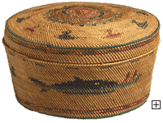

|

|
|
An Introduction to Native American
History and Culture
A Living Culture
Think not of indigenous cultures and nations all
dead and gone from this sacred land. The physical world is not at all
silent or what it seems. The nations live! My spirit lives! The spiritual
world is everywhere!. If you listen, you will hear. There are so many
ancient voices shouting from this sacred land. In the distance, I hear one
of a thousand songs of an ancient spiritual man…
- Anna Lee Walters, Pawnee and Otoe-Missouria
American Indians are not extinct people. Their cultures have a past and
present and a future. Generalizations about Native people contribute to
stereotypic notions that make no allowance for individuality or for any
possibility of change over time. Native American objects reflect aspects of
cultures that should be ascribed only to the people who produced them and to
the particular time in which the objects were made. In doing so, we respect the
diversity
of Native people and acknowledge that their cultures, like all
others, and are not fixed in time.

North America, Northwest Coast, Makah Basket,
20th century, Grass, Gift of Stanley H. Brackett 75.13.2
|
Ideas about Art
In the past, Native Americans did not create art for its own sake. The form
and decoration of handmade objects evolved out of daily needs and spiritual
beliefs over thousands of years. Art, beauty, and spirituality are so intertwined
in the daily life of traditional Native Americans that it is nearly impossible
to speak of them separately.
|
| |
Nicolas Poussin,
The Death of Germanicus, 1627, oil on canvas, The William Hood Dunwoody Fund,
The Minneapolis Institute of Arts, 58.28
|
Art in Western European tradition developed in a very different way. Paintings were the most
esteemed form of fine art, with history painting considered the most important of painting types.
European
utilitarian
objects were considered craft rather than fine art.
|